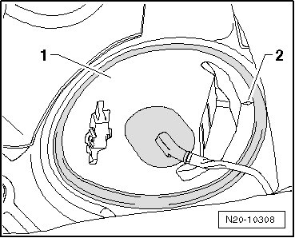
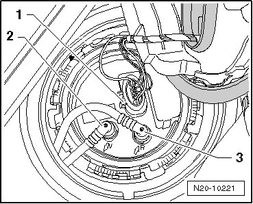
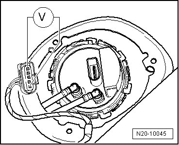

Fuel Pump, Checking
Diagnostic Procedures
Fuel Pump, Checking
• Battery voltage at 12.5 V
• Fuse for Fuel Pump (FP) on fuse holder OK.
- Switch ignition on.
• Fuel Pump (FP) must briefly start up audibly.
• Fuel Pump (FP) runs quietly.
- Switch off ignition.
If Fuel Pump (FP) does not start up
- Remove seat bench.
- Unclip cover - 1 - from fuel delivery unit. Arrow - 2 - points in direction of travel.

• On vehicles with auxiliary heater, harness connector of Metering Pump (V54) must also be disconnected.
- Disconnect connector - 1 -.

- Connect Low current voltage tester () to outer terminals of connector.

- Switch ignition on.
• LED must light up briefly.
If LED does not light up briefly:
- Locate and repair open circuit in wiring.
LED lights up briefly, voltage supply OK
- Remove fuel delivery unit.
- Check if electrical wiring between flange and fuel pump is connected.
- If no malfunction is detected in electrical circuit, replace the fuel pump.
- Assembly is performed in the reverse of the removal.
Final Procedures
After the repair work, the following work steps must be performed in the following sequence:
1. Check the DTC memory. Refer to --> [ Diagnostic Mode 03 - Read DTC Memory ] Diagnostic Modes 01 - 09.
2. If necessary, erase the DTC memory. Refer to --> [ Diagnostic Mode 04 - Erase DTC Memory ] Diagnostic Modes 01 - 09.
3. If the DTC memory was erased, generate readiness code. Refer to --> [ Readiness Code ] Monitors, Trips, Drive Cycles and Readiness Codes.